Арт-объекты5 фотоСмотреть проект
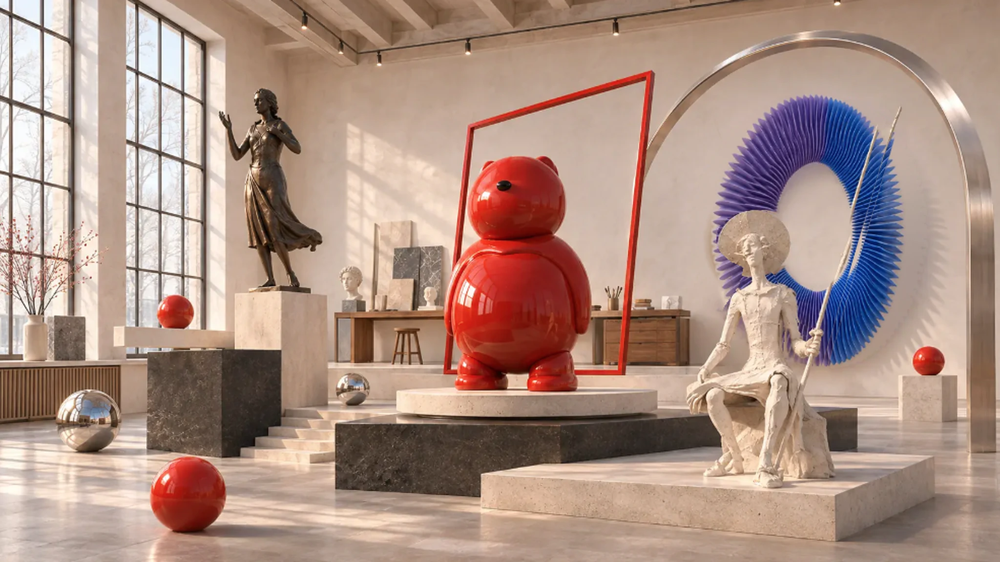
Скульптура и пространство
Проектируем интерьеры, создаём панно и скульптуры. Для брендов и событий — авторские награды и корпоративные подарки.
Избранные проекты
Вся галерея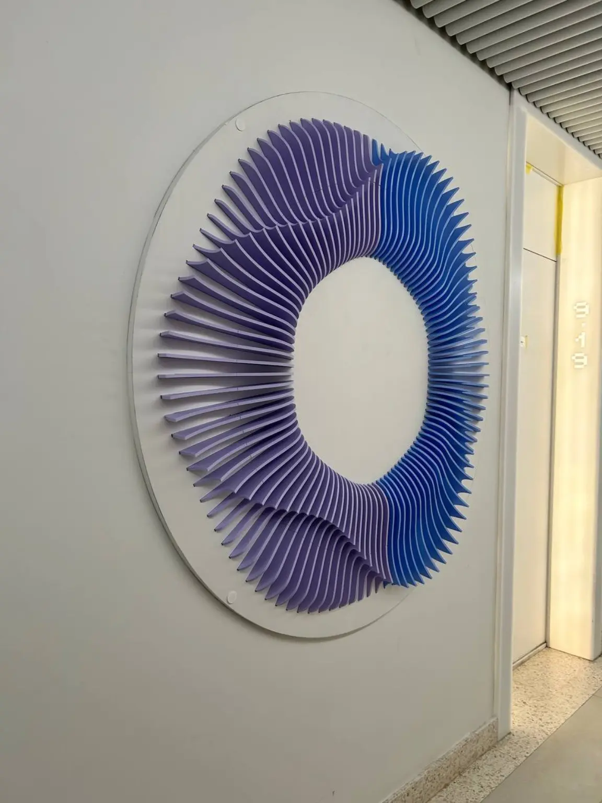
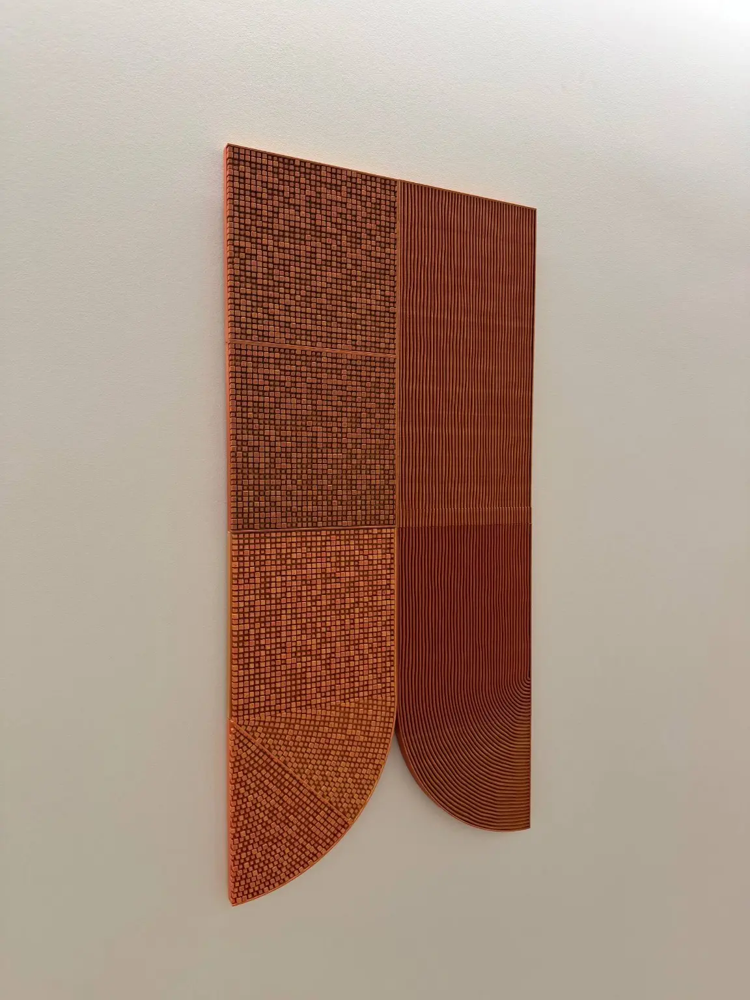
Арт-объекты / Интерьер
Объёмные панно RED7
Рельефное панно в интерьере RED7. В кейсе — сборка, отделка и готовый объект после монтажа.
Из портфолио Step3D / X.Lab
Награды
Премия СТД России
Серию статуэток напечатали на 3D-принтере. Готовые награды вручили в Театральном центре «На Страстном».
Проект команды Технопарка РГСУ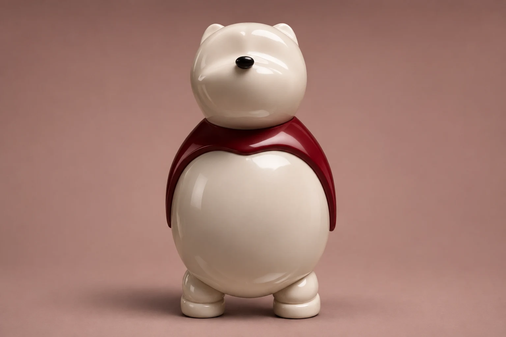
Скульптура / Персонаж
Медведь. С характером.
Фирменный персонаж ТРИФОТИ. Внутри — фотографии скульптуры и круговой обзор.
Фирменный персонаж · художественная визуализацияГалерея по направлениям
Все 64 изображенияИзбранные работы и концепты6 направлений
Смотреть Смотреть Смотреть Смотреть Смотреть Смотреть
Корпоративные заказы
Шахматы и два концептаПарковая и монументальная скульптура
Скульптурные работы · 5 кейсовДизайн интерьеров
Панно RED7 и образ мастерскойНаграды
4 проекта · 10 кадровПромышленный дизайн
Сценическая лампа и концепт подставкиАрт-объекты
1 проект · 5 фотографийВыберите направление, чтобы посмотреть работы и концепты.
Подробные кейсы · 10
Проекты этого направления пока не добавлены.
Подготовить брифЭскиз → скульптура 9 фото + видеоСмотреть проект
9 фото + видеоСмотреть проект
9 фото + видеоСмотреть проектМедведь. С характером.
Фирменный персонаж / ТРИФОТИАвторский персонаж 2 фотоСмотреть проект
2 фотоСмотреть проект
2 фотоСмотреть проектРозовый персонаж
Скульптура / пластика характераСкульптурная композиция Видео 360°Смотреть проект
Видео 360°Смотреть проект
Видео 360°Смотреть проектПластика жеста
Арт-объект / серебристое покрытиеВосстановление утраченного 6 фотоСмотреть проект
6 фотоСмотреть проект
6 фотоСмотреть проектВернуть целостность
Мемориальная пластика / восстановлениеНаграды / STEP_3D3 фото · от замысла до врученияСмотреть проект
3 фото · от замысла до врученияСмотреть проектНаграды для премии СТД России
Проект команды Технопарка РГСУ / из портфолио STEP_3DНаграды / STEP_3D · 2026 3 фото · кубок и церемонияСмотреть проект
3 фото · кубок и церемонияСмотреть проект
3 фото · кубок и церемонияСмотреть проектПереходящий кубок Спартакиады РТО
Разработка и производство Step3D / 2026Награды 3 фотоСмотреть проект
3 фотоСмотреть проект
3 фотоСмотреть проектНаградная статуэтка с пером
Награды / Скульптурная формаНаграды 1 фотоСмотреть проект
1 фотоСмотреть проект
1 фотоСмотреть проектПриз «ВМЕСТЕ»
Награды / ПризСкульптура 1 фотоСмотреть проект
1 фотоСмотреть проект
1 фотоСмотреть проектСкульптурная композиция
Скульптура / Две фигурыОткройте проект, чтобы рассмотреть детали, разные ракурсы и процесс создания.
Что можно заказать
Выберите направление, чтобы посмотреть примеры и обсудить материалы, масштаб или тираж.
01Корпоративные заказы
Для предприятий и событий+
Подставки под Алису, сувениры для предприятий, фигурки медведя с логотипом, памятные и хоккейные медали. Обсуждаем назначение, символику, тираж и требования к изделию.
Подготовить бриф02Парковая и монументальная скульптура
Образ в пространстве+
Скульптуры для парков и общественных пространств. Чтобы обсудить масштаб композиции и её размещение, пришлите фото площадки и примерные размеры.
Подготовить бриф03Дизайн интерьеров
Частные и офисные помещения+
Проектируем частные и офисные интерьеры. В альбоме можно выбрать планировку или деталь, которая вам близка. Для обсуждения подойдут площадь помещения и фотографии.
Подготовить бриф


04Награды
Предмет со смыслом+
Серия статуэток для премии СТД России и переходящий кубок Спартакиады РТО показывают два формата награды. Для обсуждения вашего заказа укажите событие, тираж и дату вручения.
Подготовить бриф05Промышленный дизайн
От функции к форме+
Промышленный дизайн изделий: назначение, эргономика, форма и конструкция с учётом материалов и изготовления.
Подготовить бриф
06Арт-объекты
Художественный замысел+
Арт-объекты для пространства и событий. Обсуждаем художественную идею, масштаб, материал и взаимодействие с окружением. В портфолио — изготовленные и установленные панно RED7 из материалов Step3D / X.Lab.
Подготовить брифОт эскиза до объекта
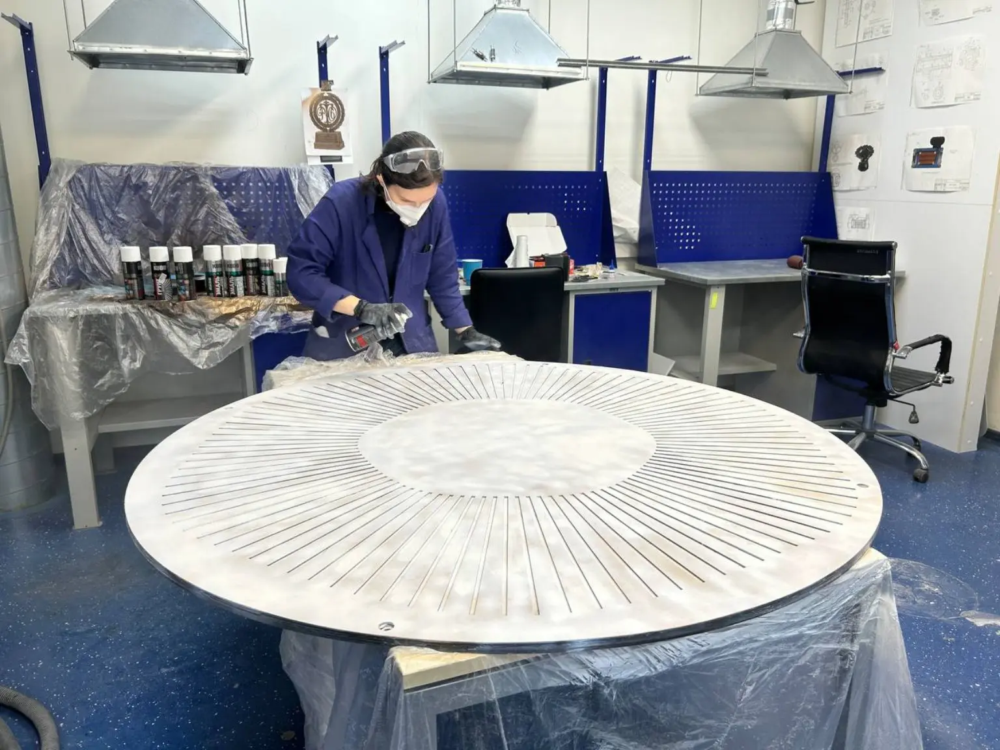
Понимаем задачу
Обсуждаем идею, контекст, масштаб, сроки и ориентир по бюджету.
Находим образ
Предлагаем направление, эскизы и материалы. Согласуем, каким будет объект.
Проверяем форму
Создаём 3D-модель и при необходимости прототип. Уточняем детали до изготовления.
Делаем реальным
Изготавливаем, обрабатываем и готовим объект к передаче или установке.
Команда ТРИФОТИ
Скульптор, дизайнер и инженеры работают вместе. Для каждого заказа подбираем материал, проверяем форму и готовим её к изготовлению.
-
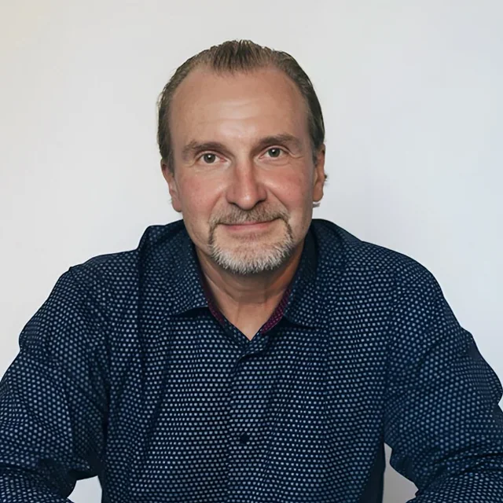
Фёдор Геннадьевич Паршин
Художник-скульптор
Об участнике
- Портрет
- Монументальная скульптура
- Интерьерная пластика
Посмотреть подборку проектов Публикации и интервью Фёдора ПаршинаСкульптор, заслуженный художник Крыма. Член Московского союза художников и Союза художников России.
Создаёт портретную и монументальную скульптуру, работает с интерьерной пластикой. Среди работ — памятник Александру Ханжонкову в Ялте и композиция «Дама с собачкой», созданная совместно с Геннадием Паршиным.
-
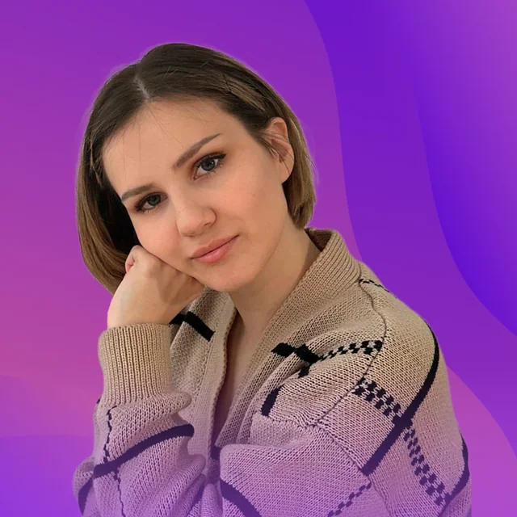
Христина Анатольевна Понкратова
Реверсивный инжиниринг · Аддитивное производство
Об участнике
- 3D-печать
- Реверсивный инжиниринг
- Наставничество
Лаборатория и проекты — сайт Технопарка РГСУ, новая вкладкаЧемпион БРИКС и чемпион Хайтек. Подготовила нескольких чемпионов России.
Специализируется на реверсивном инжиниринге и аддитивном производстве. Заведующая лабораторией промышленного дизайна и инжиниринга Технопарка РГСУ.
-
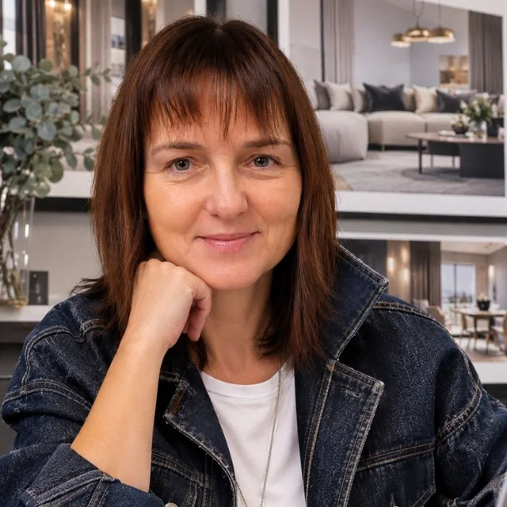
Оксана Ветрова
Дизайнер интерьеров
-
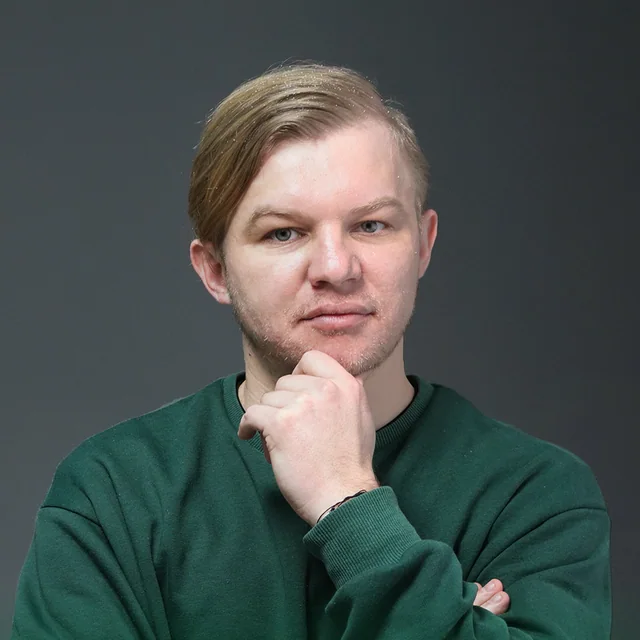
Владимир Константинович Ганьшин
Инженер · 3D-технологии и прототипирование
Об участнике
Технопарк РГСУ · источник портретаРуководит проектным центром «Технопарк РГСУ». Работает с 3D-сканированием, цифровыми моделями и 3D-печатью, помогает довести модель до физического прототипа.
Обсудим ваш проект
Пришлите менеджеру фото пространства, эскиз или ссылку на работу. Если известны размеры, тираж или дата события, укажите их в сообщении.
Заказ проекта
Перед началом
Можно начать без чертежей?
Да. Опишите задачу своими словами или пришлите фотографию места. В портфолио можно выбрать пример и добавить его в бриф.
От чего зависят стоимость и сроки?
Для награды или подарка важны тираж, материал, отделка и дата вручения. Для скульптуры или панно — размер, место и способ установки. Для интерьера — площадь, назначение помещения и объём проектирования. Укажите то, что уже известно.
Что приложить к запросу?
Для интерьера подойдёт план или фото помещения, для награды — логотип и название события, для макета — чертёж или фотографии оригинала. Файлы можно приложить к сообщению в Telegram или к письму.
Кто получит мой бриф?
Бриф заполняется и сохраняется только в вашем браузере. Кнопка «Скачать бриф» создаёт текстовый файл на вашем устройстве. Сайт не передаёт его менеджеру или сторонним сервисам.
Больше о ТРИФОТИ
Исследования формыВизуализации · концепты · 360°
Цвет и фактураЦвет. Свет.
Цвет. Свет.
Характер предмета.
Художественные визуализации: исследуем, как освещение и окружение меняют восприятие формы.
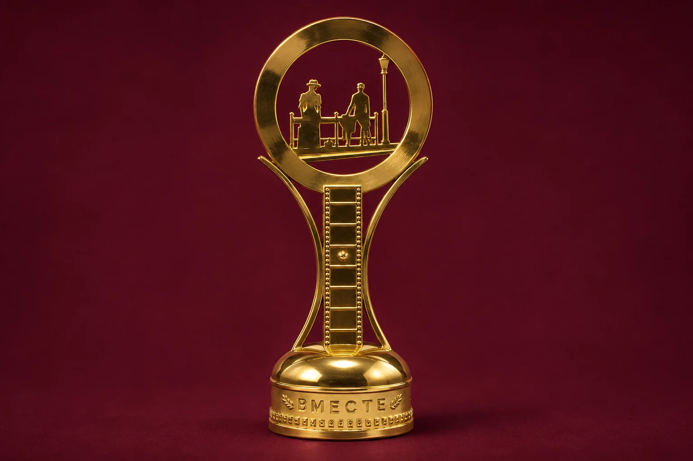
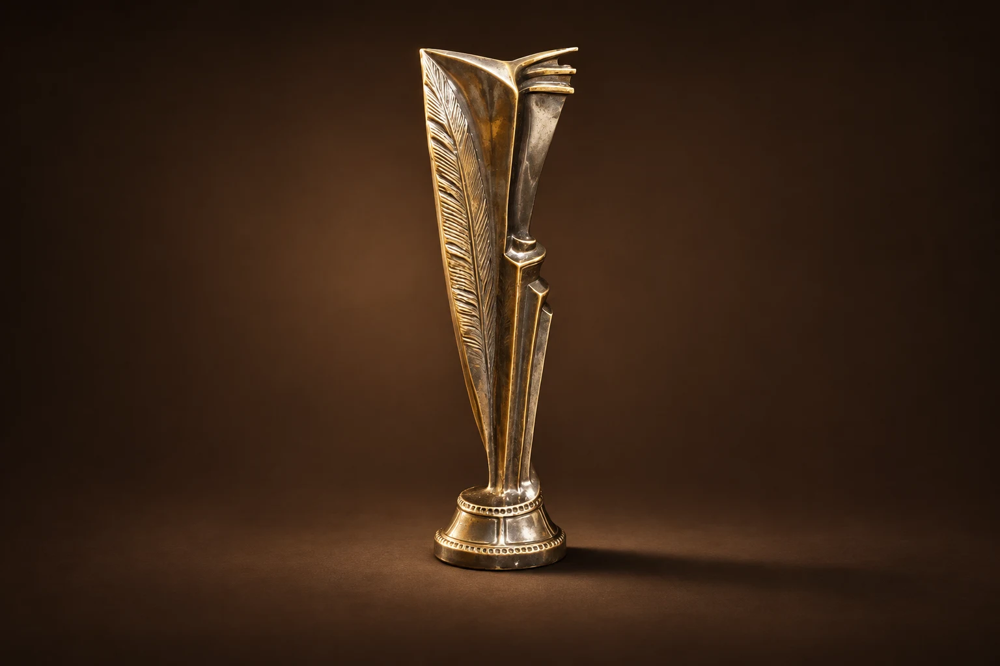
Концепты и исследования формы.
Предоставленные изображения показывают замысел. Они не подтверждают изготовление или заказ со стороны указанной на медали команды. Интерактивных 3D-моделей этих концептов пока нет.
Подлинное видеоМедведь · круговой обзор
ОБЪЕКТ № 001МАСКОТ ТРИФОТИ

Стрелки влево и вправо — повернуть медведя. Пробел или Enter — включить или приостановить вращение.
Характер — в деталях.
Цвета ТРИФОТИ
↔ Поверните медведяЖурнал и публикацииИстории · интервью · авторство
Журнал ТРИФОТИПроекты, события
и работа с формой
и работа с формой
Новости
и блог

Событие ·
Награды на театральной сцене
Награды для Премии Председателя и Сопредседателя СТД РФ, вручённые на церемонии с Владимиром Машковым. Проект команды Технопарка РГСУ из портфолио STEP_3D.
Посмотреть проект
Блог · История проекта
Как у формы появляется характер
Эскиз, исходная форма и цветовые исполнения медведя. В галерее можно сравнить силуэт и детали скульптуры в белом и красном цвете.
Посмотреть проект
Блог · История проекта
Внимание к утраченной форме
Сохранившийся объект, детали утраты и ракурсы скульптурной модели. В кейсе собраны фотографии мемориальной композиции и её пластической проработки.
Посмотреть проектФёдор Паршин / скульптор
Публикации
и интервью
Разговоры о скульптуре, репортажи и публикации о работах Фёдора Паршина. Подборка проверенных источников, а не полный список всех публикаций.
Интервью
Вечерняя Москва ·
О скульптуре и работе с образом
Разговор с Фёдором Паршиным о портретной скульптуре, ялтинских памятниках и работе в интерьерах.
Читать у источникаСовместное интервью
Вечерняя Москва ·
Отец и сын: семейная профессия
Геннадий и Фёдор Паршины рассказывают о профессии, совместной работе и поиске скульптурного образа.
Читать у источникаВидеоинтервью
Радио ЗВЕЗДА / Звезда Аналитика ·
О скульптуре, памяти и работе с отцом
Беседа с Фёдором Паршиным о монументальной скульптуре, мемориальных работах и творческом сотрудничестве с отцом.
Видео на сайте изданияТелерепортаж
47канал / Ленинградская областная телекомпания ·
Замысел мемориала в Петрозаводске
Репортаж об открытии мемориала с прямой речью Фёдора Паршина о замысле скульптурной композиции.
Видео на сайте изданияВыставочный каталог
Фестиваль «Видеть и слышать» · 2025
Фёдор Паршин в каталоге «Видеть и слышать»
Произведение «Преподобный Сергий Радонежский» и раздел о художнике в каталоге II фестиваля современного церковного искусства.
Читать у источникаИнтервью с основательницей центра
Одинцовский информационный центр ·
Искусство и Доброториум
Елизавета Молчанова рассказывает о создании Доброториума и роли Фёдора Паршина в жизни центра.
Читать у источникаКаталог материалов21 источник
Интервью, статьи, каталоги и видео. Ссылки открываются в новой вкладке на сайтах изданий или в электронной копии выпуска; тексты и медиа остаются у источников.
Неполные даты идут после точных внутри своего года или месяца; материалы без даты — в конце. Указана дата публикации, а не создания работы.
Показано: 21 из 21.
Ничего не найдено. Попробуйте другое название или издание, смените тип публикации или сбросьте все условия.
Севастопольская газета
Новый этап проекта памятника Лазареву — Севастопольская газета, новая вкладка
Сообщение о рассмотрении проекта на архитектурно-художественном совете. На дату статьи место установки ещё обсуждалось.
Речь о проекте воссоздания, а не о завершённой установке.
Вести Севастополь / ГТРК Севастополь
Согласование облика памятника Лазареву — Вести Севастополь / ГТРК Севастополь, новая вкладка
Материал о согласовании проекта воссоздания памятника. Фёдор Паршин назван скульптором будущей фигуры.
Ссылка ведёт на страницу издания. Доступность внешнего видеоплеера может отличаться.
Одинцовский информационный центр
Искусство и Доброториум — Одинцовский информационный центр, новая вкладка
Елизавета Молчанова рассказывает о создании Доброториума и роли Фёдора Паршина в жизни центра.
Это интервью с Елизаветой Молчановой, не с Фёдором Паршиным.
Доброториум
Десятилетие Доброториума — Доброториум, новая вкладка
Рассказ о юбилейном фестивале Доброториума и его открытии руководителем центра Фёдором Паршиным.
Радио ЗВЕЗДА / Звезда Аналитика
О скульптуре, памяти и работе с отцом — Радио ЗВЕЗДА / Звезда Аналитика, новая вкладка
Беседа с Фёдором Паршиным о монументальной скульптуре, мемориальных работах и творческом сотрудничестве с отцом.
Фестиваль «Видеть и слышать»
Фёдор Паршин в каталоге «Видеть и слышать» — Фестиваль «Видеть и слышать», новая вкладка
Произведение «Преподобный Сергий Радонежский» и раздел о художнике в каталоге II фестиваля современного церковного искусства.
Каталог 2025 года, с. 298–299. Ссылка ведёт на страницу фестиваля.
Российское военно-историческое общество
Памятник на поле Альминского сражения — Российское военно-историческое общество, новая вкладка
Сообщение об открытии воссозданного памятника солдату Владимирского пехотного полка и работе скульптора.
Фестиваль «Видеть и слышать»
Рельеф Данилова монастыря — Фестиваль «Видеть и слышать», новая вкладка
Биографическая справка и рельеф Данилова монастыря в каталоге выставки «Монументальное искусство в церкви».
Каталог 2023 года, с. 208–209. Ссылка ведёт на страницу выставки.
Таткультресурсцентр
Фестиваль «Крымская мозаика» — Таткультресурсцентр, новая вкладка
В сообщении о фестивале изобразительного искусства Фёдор Паршин назван председателем экспертной комиссии.
ПУМ24
Финал конкурса мемориала «Армения» — ПУМ24, новая вкладка
Материал о финале конкурса, в котором участвовал Фёдор Паршин. Победителем стал другой проект.
Доброториум
«Кот желаний»: от рисунка к скульптуре — Доброториум, новая вкладка
Публикация Доброториума о скульптуре, созданной Фёдором Паршиным на основе детского рисунка.
Вечерняя Москва
Отец и сын: семейная профессия — Вечерняя Москва, новая вкладка
Геннадий и Фёдор Паршины рассказывают о профессии, совместной работе и поиске скульптурного образа.
«Морская политика России»
Проект воссоздания памятника Лазареву — «Морская политика России», новая вкладка
Репортаж из мастерской о работе над проектом воссоздания памятника. Это рассказ о замысле, не об установленном монументе.
№26, октябрь 2019, с. 72–75.
47канал / Ленинградская областная телекомпания
Замысел мемориала в Петрозаводске — 47канал / Ленинградская областная телекомпания, новая вкладка
Репортаж об открытии мемориала с прямой речью Фёдора Паршина о замысле скульптурной композиции.
Свято-Троицкая Сергиева лавра
Скульптурная композиция на Куликовом поле — Свято-Троицкая Сергиева лавра, новая вкладка
Сообщение об открытии памятника Сергию Радонежскому и Димитрию Донскому с указанием автора композиции.
«Встреча» / Московская духовная академия
Четыре образа Сергия Радонежского — «Встреча» / Московская духовная академия, новая вкладка
Скульптор объясняет, как выбирал разные образы для четырёх памятников Сергию Радонежскому.
Журнал «Встреча», №1(33), с. 62–63. Электронная копия: Азбука веры.
Объединение московских скульпторов
Памятник Ханжонкову в каталоге скульпторов — Объединение московских скульпторов, новая вкладка
Публикация ялтинского памятника Ханжонкову с атрибуцией Фёдору Паршину в юбилейном сборнике объединения скульпторов.
Сборник «1992–2012», с. 278. Большой PDF, около 53 МБ.
Культура
Памятник Ханжонкову и телекинофорум «Вместе» — Культура, новая вкладка
Репортаж о телекинофоруме включает рассказ об открытии памятника Ханжонкову и комментарий Фёдора Паршина.
Газета «Культура», 15 сентября 2011, с. 12.
Вечерняя Москва
О скульптуре и работе с образом — Вечерняя Москва, новая вкладка
Разговор с Фёдором Паршиным о портретной скульптуре, ялтинских памятниках и работе в интерьерах.
«Памятники в Петрозаводске» / Константин Кулаков
Мемориал на кладбище «Пески» — «Памятники в Петрозаводске» / Константин Кулаков, новая вкладка
Авторская карточка скульптора и сведения о мемориале в Петрозаводске в фотокаталоге Константина Кулакова.
Доброториум
Профессиональная биография — Доброториум, новая вкладка
Страница Фёдора Геннадьевича Паршина на сайте Доброториума: профессиональная деятельность и работа в центре.
Прочитать · понять · поделиться
Контекст
и авторство
Короткие маршруты по публикациям, словарь и пояснения к источникам. Чтобы отличать замысел от результата, а участие — от авторства.
01 / Что прочитать сначала 3 маршрута
О профессии
От личного взгляда к совместной работе.
- О скульптуре и работе с образом — новая вкладка
Начать с разговора о портретной скульптуре и поиске образа.
- Отец и сын: семейная профессия — новая вкладка
Продолжить совместным интервью Геннадия и Фёдора о семейной профессии.
- О скульптуре, памяти и работе с отцом — новая вкладка
Услышать автора в видеоинтервью о скульптуре и сотрудничестве с отцом.
Память и монументальная форма
Замысел, конкурс и открытый объект — разные свидетельства.
- Проект воссоздания памятника Лазареву — новая вкладка
Увидеть работу над проектом Лазарева: это замысел, не завершённая установка.
- Финал конкурса мемориала «Армения» — новая вкладка
Различить участие в финале и победу: конкурс выиграл другой проект.
- Памятник на поле Альминского сражения — новая вкладка
Прочитать официальное сообщение уже об открытии памятника.
Как рождается характер
Рисунок, портрет и разные трактовки одного образа.
- «Кот желаний»: от рисунка к скульптуре — новая вкладка
История «Кота желаний» связывает детский рисунок и скульптуру.
- О скульптуре и работе с образом — новая вкладка
Интервью помогает понять внимание к портрету и индивидуальности.
- Четыре образа Сергия Радонежского — новая вкладка
Четыре образа Сергия Радонежского показывают разные авторские решения.
Это редакционные маршруты по существующему каталогу, а не новые публикации. Полные тексты и видео остаются у источников; внешние ссылки открываются в новой вкладке.
02 / Хронология свидетельств 19 с датой · 2 без даты
Указаны даты публикаций, а не даты создания работ и не биографические вехи. Если известен только год или месяц, точный день не добавляется. Внутри года материалы с неполной датой стоят после датированных точнее; их место не задаёт последовательность событий.
О скульптуре и работе с образом — новая вкладка
Интервью
Разговор с Фёдором Паршиным о портретной скульптуре, ялтинских памятниках и работе в интерьерах.
Памятник Ханжонкову и телекинофорум «Вместе» — новая вкладка
Репортаж об открытии
Репортаж о телекинофоруме включает рассказ об открытии памятника Ханжонкову и комментарий Фёдора Паршина.
Памятник Ханжонкову в каталоге скульпторов — новая вкладка
Профессиональный каталог · PDF
Публикация ялтинского памятника Ханжонкову с атрибуцией Фёдору Паршину в юбилейном сборнике объединения скульпторов.
Скульптурная композиция на Куликовом поле — новая вкладка
Сообщение об открытии
Сообщение об открытии памятника Сергию Радонежскому и Димитрию Донскому с указанием автора композиции.
Четыре образа Сергия Радонежского — новая вкладка
Интервью · PDF
Скульптор объясняет, как выбирал разные образы для четырёх памятников Сергию Радонежскому.
Замысел мемориала в Петрозаводске — новая вкладка
Репортаж об открытии
Репортаж об открытии мемориала с прямой речью Фёдора Паршина о замысле скульптурной композиции.
Проект воссоздания памятника Лазареву — новая вкладка
Проект · не установленный монумент
Репортаж из мастерской о работе над проектом воссоздания памятника. Это рассказ о замысле, не об установленном монументе.
Отец и сын: семейная профессия — новая вкладка
Совместное интервью
Геннадий и Фёдор Паршины рассказывают о профессии, совместной работе и поиске скульптурного образа.
«Кот желаний»: от рисунка к скульптуре — новая вкладка
История работы
Публикация Доброториума о скульптуре, созданной Фёдором Паршиным на основе детского рисунка.
Финал конкурса мемориала «Армения» — новая вкладка
Конкурсный финал · другой победитель
Материал о финале конкурса, в котором участвовал Фёдор Паршин. Победителем стал другой проект.
Фестиваль «Крымская мозаика» — новая вкладка
Институциональная новость
В сообщении о фестивале изобразительного искусства Фёдор Паршин назван председателем экспертной комиссии.
Рельеф Данилова монастыря — новая вкладка
Выставочный каталог
Биографическая справка и рельеф Данилова монастыря в каталоге выставки «Монументальное искусство в церкви».
Памятник на поле Альминского сражения — новая вкладка
Сообщение об открытии
Сообщение об открытии воссозданного памятника солдату Владимирского пехотного полка и работе скульптора.
О скульптуре, памяти и работе с отцом — новая вкладка
Видеоинтервью
Беседа с Фёдором Паршиным о монументальной скульптуре, мемориальных работах и творческом сотрудничестве с отцом.
Фёдор Паршин в каталоге «Видеть и слышать» — новая вкладка
Выставочный каталог
Произведение «Преподобный Сергий Радонежский» и раздел о художнике в каталоге II фестиваля современного церковного искусства.
Десятилетие Доброториума — новая вкладка
Новость центра
Рассказ о юбилейном фестивале Доброториума и его открытии руководителем центра Фёдором Паршиным.
Искусство и Доброториум — новая вкладка
Интервью с основательницей центра
Елизавета Молчанова рассказывает о создании Доброториума и роли Фёдора Паршина в жизни центра.
Согласование облика памятника Лазареву — новая вкладка
Согласование проекта
Материал о согласовании проекта воссоздания памятника. Фёдор Паршин назван скульптором будущей фигуры.
Новый этап проекта памятника Лазареву — новая вкладка
Проект · установка не подтверждена
Сообщение о рассмотрении проекта на архитектурно-художественном совете. На дату статьи место установки ещё обсуждалось.
Материалы без даты публикации
Мемориал на кладбище «Пески» — новая вкладка
Краеведческий каталог
Авторская карточка скульптора и сведения о мемориале в Петрозаводске в фотокаталоге Константина Кулакова.
Профессиональная биография — новая вкладка
Биографическая справка
Страница Фёдора Геннадьевича Паршина на сайте Доброториума: профессиональная деятельность и работа в центре.
03 / Словарь работы с формой 4 термина
Краткие определения терминов, встречающихся на сайте. Это справка, а не перечень оборудования или материалов объединения. Определения сверены с первичными источниками 26 октября 2026 года; ссылки на английском языке.
- Скульптура
Объёмное произведение искусства, форма которого существует в трёхмерном пространстве.
Irish Museum of Modern Art — новая вкладка- Рельеф
Скульптурное изображение, выступающее над плоским фоном и связанное с ним.
National Portrait Gallery — новая вкладка- Аддитивное производство / 3D-печать
Создание объёмного изделия по цифровой модели последовательным добавлением материала, обычно слоями.
NIST — Национальный институт стандартов и технологий США — новая вкладка- Реверсивный инжиниринг
Изучение существующего изделия, чтобы понять его устройство и получить данные для воспроизведения или доработки. Для физических объектов это может включать создание цифровой модели.
Autodesk — новая вкладка
04 / Чьи работы и свидетельства Как читать атрибуцию
ТРИФОТИ — объединение и площадка
Название сайта не означает авторство объединения во всех показанных работах. Медведь представлен как фирменный персонаж ТРИФОТИ. У остальных скульптурных кейсов сохранены исходные описания; персональные роли, не названные в них, не приписываются участникам команды.
Step3D — разработка и производство кубка
Переходящий кубок Спартакиады РТО атрибутирован Step3D. Включение кейса в эту подборку не меняет его авторство. Театр «Ленком Марка Захарова» — первый обладатель кубка, а не его изготовитель.
Исходный кейс Step3D — новая вкладкаТехнопарк РГСУ — команда наград СТД
Награды для Премии Председателя и Сопредседателя СТД РФ реализованы командой Технопарка РГСУ и показаны из портфолио STEP_3D. Публичное вручение не означает соавторство, заказ или рекомендацию со стороны вручавшего награды.
О создании наград — Технопарк РГСУ — новая вкладкаФёдор Паршин — отдельный корпус публикаций
Интервью и каталоги рассказывают о личной практике скульптора. Их присутствие не приписывает ему все кейсы портфолио. Имена соавторов и статус работ сохраняются в аннотациях и первоисточниках.
Совместное интервью Геннадия и Фёдора Паршиных — новая вкладкаСправка для пересылки
Кратко об объединении, участниках и выбранных работах. Ссылки на кейсы, публикации и профессиональные биографии — рядом. Без данных вашего брифа.